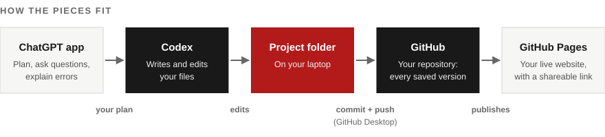

The ChatGPT desktop app is your thinking partner.
Use it to brainstorm, plan what to build, ask what a word means, or paste in a screenshot of an error and ask what went wrong. It talks with you about your project. It doesn't change your files.
Set up the tools developers use every day, then build and publish the first version of your own project, without writing code by hand.
AI coding tools have changed who gets to build software. You describe what you want in plain English, an AI agent writes and runs the code, and you check that it works. You still make every decision that matters: what to build, whether it's right, and when it's done.
By the end of tonight you'll have a GitHub account, the tools set up on your laptop, and the first version of a small project of your own, live on the internet with a link you can share. Over the next five weeks you'll keep adding to that same project, one new skill at a time, so by the end of the semester you'll have something real to show.
| Week | What you add | Example: a spending tracker |
|---|---|---|
| 5 | A working first version, live on the internet | Add expenses and see totals by category |
| 6 | Real data, cleaned and checked | Import a messy bank export and fix it |
| 7 | A live connection to another service, or an automation | Convert amounts into other currencies |
| 8 | Search that shows where each result came from | Search past expenses and notes |
| 9 | Tests, and an honest section on risks and limits | Automatic checks and a privacy note |
| 10 | A polished README and a 3-minute demo | Present it to the class |
One helps you think, one builds, and one keeps your work safe and puts it online.

Use it to brainstorm, plan what to build, ask what a word means, or paste in a screenshot of an error and ask what went wrong. It talks with you about your project. It doesn't change your files.
It works inside one folder on your laptop. It reads what's there, writes and edits files, runs what it builds, and shows you exactly what it changed.
It stores every saved version of your project, so you can always go back. GitHub Desktop is the app that sends your work there, and GitHub Pages turns it into a website anyone can visit.
| Use the ChatGPT app to… | Use Codex to… |
|---|---|
| Brainstorm and narrow down a project idea | Create and edit your project's files |
| Ask "what's a commit?" or "explain this error" | Run your project and fix what breaks |
| Plan what version 1 should include | Write tests and a README |
| Paste in a screenshot and ask what's wrong | Make a change across several files at once |
AGENTS.md, like "explain every change in plain English."Codex comes with your ChatGPT account. Free accounts work on your own laptop, which is everything you need this semester. Paid plans can also send Codex tasks to run in the cloud and open changes on GitHub directly.
The best first project solves a small problem you have and has room to grow.
A tool that helps [who] [do what], starting with [one feature].
| Project | Version 1 tonight | Later, it could add… |
|---|---|---|
| Spending tracker | Add expenses, see totals by category | A cleaned bank export, currency conversion, search through past expenses |
| Study planner | Assignments with a countdown to each due date | A cleaned deadline list, a calendar export, search through your notes |
| Event finder | A list of events you can filter | A cleaned events dataset, the weather for each event day, search by description |
| Recipe scaler | Scale a recipe to any number of servings | A cleaned recipe dataset, nutrition information, search by ingredient |
| Workout log | Log workouts and see the weekly total | A cleaned fitness-app export, weather for run days, search past workouts |
Help me choose a small first coding project. I'm a college student with no coding experience, and I'll build it with an AI coding tool tonight in about 20 minutes. Rules: it must run in a web browser with no login, no server, and no real personal data. The first version must fit in one sentence: "A tool that helps [who] [do what], starting with [one feature]." Ask me three quick questions about my classes, hobbies, and small daily annoyances. Then suggest five ideas. For each one, give the one-sentence first version and two features I could add later.
Write your sentence down somewhere you can copy it. You'll paste it into Codex twice tonight.
Four apps and accounts, then your project's home. Start steps 1 to 4 right away, since the downloads take the longest.
Go to github.com/signup. Use a personal email you'll keep after graduation, not your school email. Choose a professional username, because it becomes part of your project's web address, like yourname.github.io. Verify your email when GitHub asks.
Then go to Settings → Emails and turn on Keep my email addresses private, so your email address doesn't appear on your public work.
You're done when: you can see your profile at github.com/your-username.
Download it from desktop.github.com, install it, and choose Sign in to GitHub.com. It finishes signing in through your browser.
If it asks you to configure Git, keep your name and choose the private GitHub email it offers (it ends in users.noreply.github.com).
You're done when: GitHub Desktop opens to a screen that says "Let's get started."
Download it from chatgpt.com/download for Mac or Windows, install it, and sign in with your ChatGPT account. If you don't have one, you can create a free account there.
You're done when: you can send a message in the app.
Codex comes with your ChatGPT account. In the ChatGPT desktop app, look for Codex in the sidebar or app switcher and open it. If your version doesn't show it, download the Codex app from openai.com/codex and sign in with the same ChatGPT account.
You're done when: Codex asks you to choose a project or a folder.
Go to chatgpt.com/codex/students and verify that you're a student. Codex already works on a free account. The credits give you a lot more room to build.
You're done when: the page confirms your credits.
On github.com, click + in the top-right corner, then New repository.
spending-tracker.Now click the green Code button, then Open with GitHub Desktop. When GitHub Desktop asks where to save it, make a folder called Codex inside your Documents folder and choose it. Click Clone.
You're done when: GitHub Desktop shows your repository and says "No local changes."
In Codex, start a new project and choose your repository's folder: Documents → Codex → your repository name. Check that it says Work locally under the message box, and leave permissions on Default.
You're done when: Codex shows your folder name and is waiting for your first message.
Copy this prompt, replace the bracketed part with your project sentence, and send it to Codex.
Create a file named AGENTS.md in this project with exactly the content between the lines below. Replace the text in brackets with my project sentence: "[paste your project sentence here]" --- # Instructions for AI coding agents ## About this project [project sentence] It's built by a student who is new to coding, so explain everything in plain English. ## Rules - Build a static website using only HTML, CSS, and JavaScript. No frameworks, build tools, or installs. - Keep it simple: index.html, plus style.css and script.js if needed. - It must work when index.html is opened directly in a browser and when it's published on GitHub Pages. - Never add logins, servers, databases, paid services, API keys, passwords, or real personal data. - If the project needs to remember things, save them only in the browser (localStorage). - After every change, summarize what you changed in two to four plain-English bullet points, and tell me exactly how to test it. - Keep README.md up to date: what the project does, how to use it, and a list of changes. - If my request is unclear or too big, ask me one question or suggest a smaller first step instead of guessing. ---
You're done when: you can see AGENTS.md in your project folder.
Send Codex this message:
Create index.html with a heading that says "Hello from [your first name]" and one sentence describing my project. Then tell me how to open it in my browser.
Open index.html from your project folder (double-click it) and check that it appears in your browser.
Then save your first commit. In GitHub Desktop, you'll see your new files listed. In the Summary box at the bottom left, type Add hello page, click Commit to main, then click Push origin at the top.
You're done when: you refresh your repository on github.com and see index.html and AGENTS.md there.
Three prompts: build it, test it, explain it. Commit after each one.
Build the first version of my project in index.html, plus style.css and script.js if needed. What it is: [your project sentence] The one feature for version 1: [your one feature] Requirements: - A clean, simple design that works on a phone and a laptop. - If someone enters something invalid, show a friendly message instead of breaking. - Replace the hello page. When you're done, tell me in plain English what you built and exactly how to try it.
Open index.html in your browser (or refresh it) and try the feature. If it works, commit with the summary Build version 1 and push.
The filled-in parts of the prompt:
What came back: a single page with the form at the top, the list of expenses underneath, and a small table of category totals. Codex's summary said it saved expenses in the browser, rejected empty or non-number amounts with a message, and that to test it you open index.html and add an expense.
An AI agent will tell you its work is done. Your job is to check. Before you try anything, write down what should happen. That way the result can't talk you into it.
Write at least five tests in three kinds:
The everyday use. Does the main feature do what it should?
The limits: zero, an empty box, a very large number, reloading the page.
Something a person might type by mistake, like letters where a number goes.
| # | Kind | What I do | What should happen | What happened | Pass? |
|---|---|---|---|---|---|
| 1 | Normal | Add "Lunch," $12.50, Food | Food total shows $12.50 | Food total shows $12.50 | ✓ |
| 2 | Normal | Add "Coffee," $7.50, Food | Food total shows $20.00 | Food total shows $20.00 | ✓ |
| 3 | Edge | Add an expense of $0 | A message asks for an amount above zero | It was added to the list | ✗ |
| 4 | Edge | Reload the page | Both expenses are still there | Both expenses are still there | ✓ |
| 5 | Wrong input | Type "twelve" as the amount | A message appears and nothing is added | A message appears and nothing is added | ✓ |
| # | Kind | What I do | What should happen | What happened | Pass? | |---|---|---|---|---|---| | 1 | Normal | | | | | | 2 | Normal | | | | | | 3 | Edge | | | | | | 4 | Edge | | | | | | 5 | Wrong input | | | | |
Run every test. If any fail, send Codex this:
I tested my project and these tests failed: [for each one: what I did, what should have happened, what actually happened] Fix them one at a time. After each fix, tell me how to check it. Don't change anything else.
Rerun all your tests, not just the ones that failed, since a fix can break something else. Then commit with Fix issues from testing and push.
Rewrite README.md for someone visiting my project on GitHub. Include: - The project name and one sentence on what it does and who it's for - How to use it, in three steps - A "Tests" section with this table: [paste your filled-in test table] - A "Build log" section with three to five short entries. Each entry says what I asked for, what happened, and how I checked it. Use this conversation to draft them, and keep them honest, including anything that went wrong. - A "Changes" section listing what's been built so far Keep it short and plain.
Read the README Codex wrote and fix anything that isn't true. Commit with Write README and push.
GitHub Pages turns your repository into a website for free, in about two minutes.
In GitHub Desktop, if you see Push origin with a number next to it, click it. Then check your repository on github.com: you should see index.html, AGENTS.md, and README.md.
You're done when: GitHub Desktop says "No local changes" and nothing is waiting to push.
On your repository's page on github.com, click Settings, then Pages in the left sidebar. Under Build and deployment, set Source to Deploy from a branch. Set the branch to main and the folder to / (root), then click Save.
You're done when: the page says your site is being built.
Wait a minute or two and refresh the Pages settings. A link appears at the top, like https://your-username.github.io/spending-tracker/. Open it. Then open it on your phone, too.
You're done when: your project works at that link.
On your repository's main page, click the gear icon next to About. Check Use your GitHub Pages website, then click Save changes.
You're done when: your live link shows on the right side of your repository's page.
Post your live link in the NME Slack channel.
Wait two more minutes and refresh. Then check that index.html is in the top level of your repository (not inside another folder) and is spelled exactly index.html, all lowercase.
File names on the internet are case-sensitive. If your page links to Style.css but the file is named style.css, it works on your laptop but not online. Ask Codex: "My page works locally but loses its styling on GitHub Pages. Check every file name and link for mismatches."
Did you commit and push? Check GitHub Desktop. If you did, wait a minute, then do a hard refresh (Cmd+Shift+R on a Mac, Ctrl+Shift+R on Windows).
Most problems tonight fall into one of these.
Go back to your last save point. In GitHub Desktop, right-click the changed files and choose Discard changes. Then ask again with a smaller, more specific request. One feature per message works better than three.
Take a screenshot and paste it into the ChatGPT app with: "I'm new to coding. Explain this error in plain English and tell me what to ask Codex to fix it."
Read it first. If it's working inside your project folder and the explanation makes sense, approve it. If you're not sure, paste the command into the ChatGPT app and ask what it does. Don't approve anything that deletes files outside your project or installs software you didn't ask for.
Switch to a smaller model in Codex's model picker, which lets your credits go further. If you're fully out, keep planning and writing tests in the ChatGPT app, and come back when your limit resets.
Click Fetch origin, then Push origin again. This usually happens after you edited something on github.com, like the README.
In GitHub Desktop, open the History tab. Every commit is listed with its summary. Find the last one that worked, and ask Codex: "My project worked at the commit named '[summary]'. Something since then broke [what's wrong]. Find what changed and fix it."
You can still ship tonight with just a browser.
index.html. Or, on github.com, open your repository, click Add file → Create new file, name it index.html, paste the code, and click Commit changes.You'll miss out on Codex testing and fixing its own work, so set up Codex on a Mac or Windows laptop before next week.
Submit two links, your public GitHub repository and your live GitHub Pages site, in one short document uploaded to the submission folder.
This is the start of a project you'll keep building through Week 10, so it's worth getting the foundation right. If you didn't finish tonight, use the steps above to finish on your own.
Upload one document (a Google Doc, Word file, or PDF) named Lastname_Firstname_Week5 to the submission folder. It only needs two lines:
https://github.com/your-username/spending-tracker.https://your-username.github.io/spending-tracker/.index.html, AGENTS.md, and README.md.These are also what we'll look for when we review it.
A simple tool that helps me keep track of what I spend each week, by category.
Your expenses are saved in your own browser. Nothing is sent anywhere.
| # | Kind | What I do | What should happen | What happened | Pass? |
|---|---|---|---|---|---|
| 1 | Normal | Add "Lunch," $12.50, Food | Food total shows $12.50 | Food total shows $12.50 | ✓ |
| 2 | Normal | Add "Coffee," $7.50, Food | Food total shows $20.00 | Food total shows $20.00 | ✓ |
| 3 | Edge | Add an expense of $0 | A message asks for an amount above zero | A message asks for an amount above zero | ✓ |
| 4 | Edge | Reload the page | Both expenses are still there | Both expenses are still there | ✓ |
| 5 | Wrong input | Type "twelve" as the amount | A message appears and nothing is added | A message appears and nothing is added | ✓ |
Each week from here, your deliverable is a new version of this same project:
Questions? Reach out to Salloni Kapoor, sk3482@cornell.edu
Back to the beginning ↑